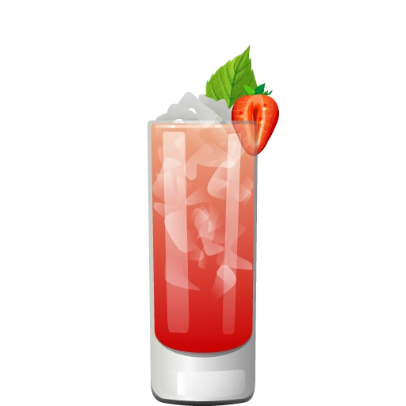
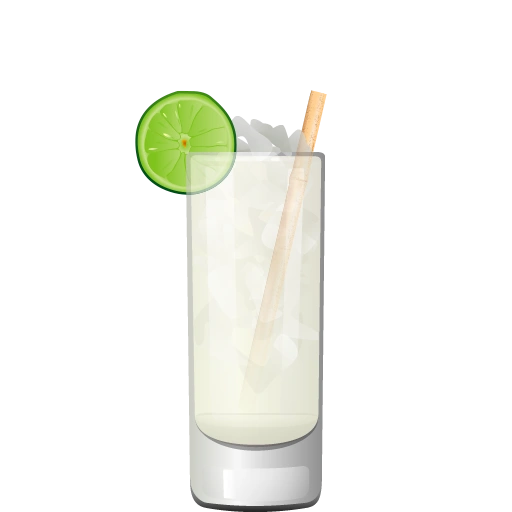
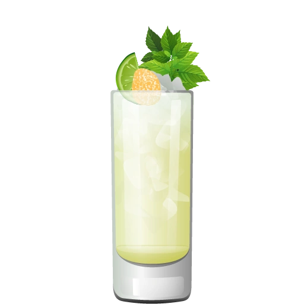

The Mojito hails from Cuba, with roots tracing back to the 16th century. It's said to have evolved from a local medicinal drink made with lime, sugar, and aguardiente, later refined into the rum-based cocktail we enjoy today. The Mojito became internationally famous thanks to its crisp, cooling profile and a boost from Ernest Hemingway's fondness for it.
| 2 oz | White Rum |
| 1 oz | Fresh Lime Juice |
| 2 tsp | Sugar |
| 6-8 | Fresh Mint Leaves |
| fill | Soda Water |
| 1 | Mint Sprig and Lime Wheel (for garnish) |
Muddle mint leaves with sugar and lime juice. Stir in white rum, fill with ice and top with soda water. Garnish with a mint sprig and lime wedge.
The Mojito is commonly served in a highball or Collins glass. These tall glasses provide ample space for muddling and stacking ingredients with ice, showcasing the cocktail's refreshing mint and lime presentation.
The Mojito's structure of spirit, citrus, sugar, and herb has inspired a variety of riffs across cultures. It's a base for fruit-forward Mojitos like strawberry, mango, or coconut, and has even led to variations with different spirits like tequila or gin.

Strawberry Mojito
Add muddled strawberries for fruity brightness.

Coconut Mojito
Use coconut water or coconut rum for tropical richness.

Gin Mojito
Substitute gin for rum to give it a botanical twist.